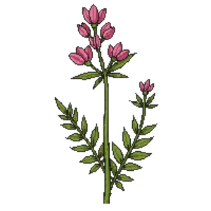

Showy Tick Trefoil
Desmodium canadense

Showy Tick Trefoil is a perennial for mid-border, suited to full sun to partial shade and clay or loam, flowering Jul, Aug, Sep.
| Type | Perennial |
|---|---|
| Mature height | 120 cm |
| Spread | 75 cm |
| Aspect | full sun to partial shade |
| Foliage | Deciduous |
| Hardiness | USDA 3a-8b |
| Pollinator-friendly | Yes |
| Pet-safe | Not confirmed |
Where to use it in a border
At around 120 cm, it sits best toward the back of a border, or on its own as a focal point with room around it. Give it about 75 cm of room to spread. It is hardy across USDA zones 3a to 8b, so check it suits your area before planting.
It appears in our lists of full sun, clay soil, pollinator-friendly plants.
Flowering through the year
JFMAMJJASOND
Worth knowing
- Its flowers are valued by bees and other pollinators.
Good companions
Plants that share its conditions and style, chosen to complement its place in the border:
- Allegheny Monkeyflowerto edge in front
- American Spikenardto flower when it does not
- Aromatic Asterto edge in front
- Betonyto edge in front
- Bird's-foot Trefoilto edge in front
- Blanket Flower 'Arizona Sun'to edge in front
Garden styles
See Showy Tick Trefoil set in a full border, with spacing and companions worked out for your own conditions, in Border Builder.
Sources
Bloom timing and hardiness drawn from:
- Lady Bird Johnson Wildflower Center (wildflower.org, 2026-05)
- UMN Extension (extension.umn.edu, 2026-05)
- NC State Extension (plants.ces.ncsu.edu, 2026-05)